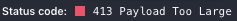

<div class="container">
 
	<h1>Conversions</h1>

  <button type="file" ngf-select="uploadSingle($file, $invalidFiles)" ngf-pattern="'.html'"
    ngf-accept="'.html'" ngf-max-size="10MB" ngf-min-height="100"
    ngf-resize="{width: 100, height: 100}">New HTML Conversion</button>
  <button type="file" ngf-select="uploadSingle($file, $invalidFiles)" ngf-pattern="'.pdf'"
    ngf-accept="'.pdf'" ngf-max-size="10MB" ngf-min-height="100"
    ngf-resize="{width: 100, height: 100}">New PDF Conversion</button>

  <table class="table table-striped" >
    <thead>
      <th>Name</th>
      <th>Created At</th>
      <th>Type</th>
      <th>Status</th>
    </thead>
    <tbody>
      <tr ng-repeat="doc in docs">
        <td>{{ doc.name }}</td>
        <td>{{ doc.created_at | date: 'medium'}}</td>
        <td><label>{{ doc.file_format }}</label></td>
        <td>
          <div ng-switch on="doc.status">
            <div ng-switch-when="Queued" class="glyphicon glyphicon-time"></div>
            <div ng-switch-when="Processing" class="glyphicon glyphicon-repeat"></div>
            <div ng-switch-when="Processed" class="glyphicon glyphicon-ok"></div>
            {{ doc.status }}
          </div>
        </td>
      </tr>
    </tbody>
  </table>
</div>

<div id="notification_area">
  <div ng-repeat="notification in notifications.slice().reverse() | limitTo : 3 track by $index " class="panel panel-default panel-notification">
    <div class="panel-body">{{ notification.timestamp | date: 'mediumTime'}} <br/> {{ notification.message }}</div>
  </div>
</div>
